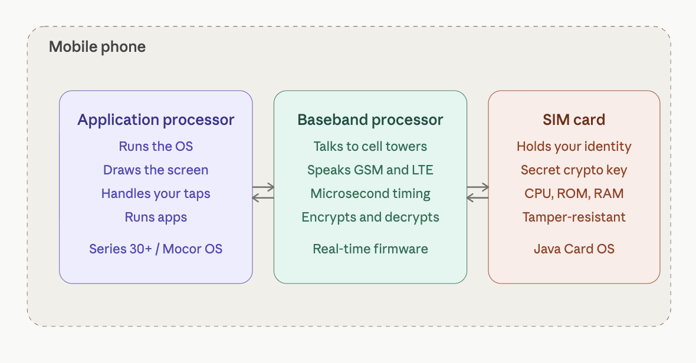
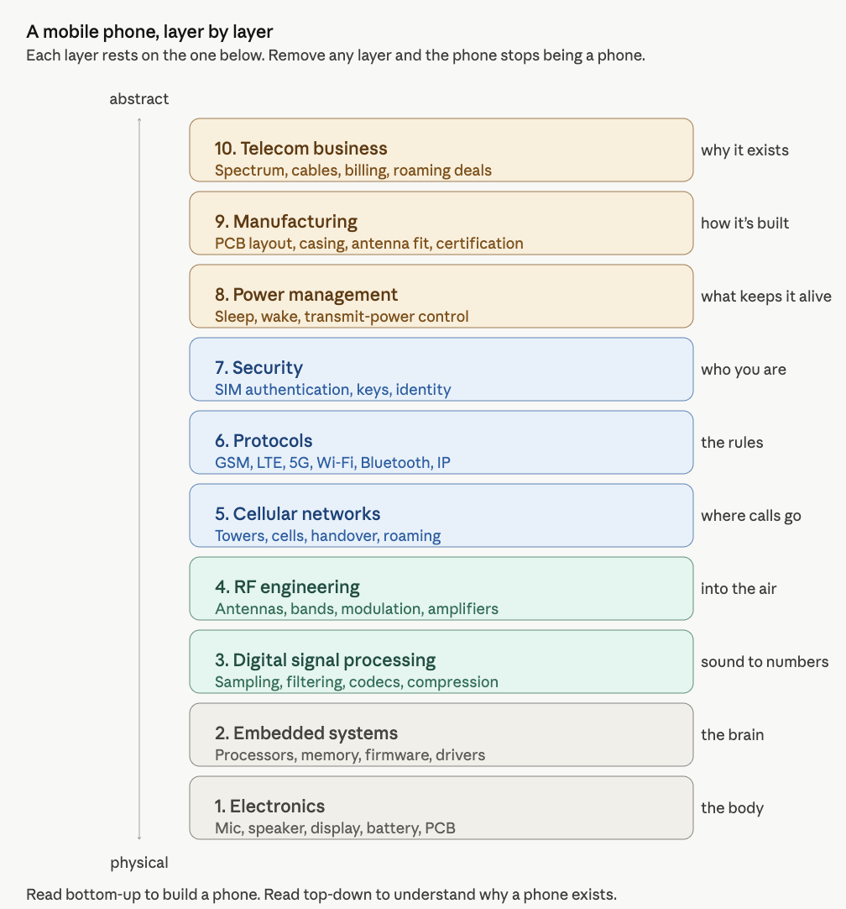
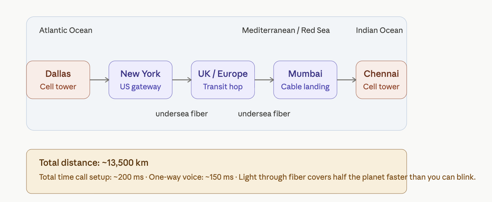
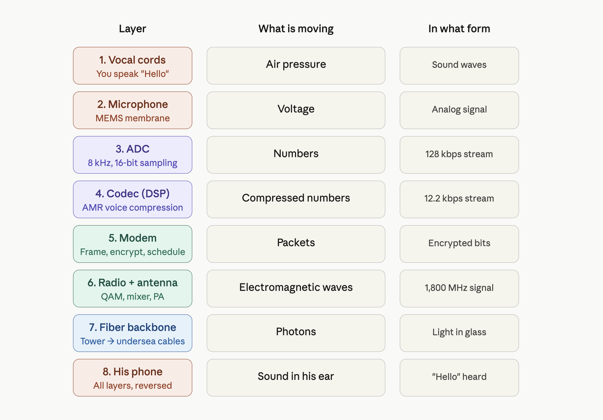
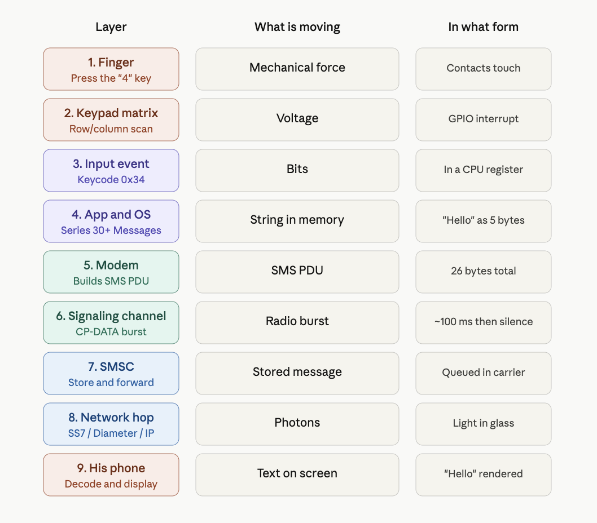

A systems-level tutorial explaining how mobile phones work, from cellular networks and voice calls to embedded electronics
Author
Rick Rejeleene
Published
May 10, 2026
Introduction: Nokia 1100 Memory
One of the mobile phones that made a lasting impact on me, my friends, and many people around me was the Nokia 1100.
At that time, I was in middle school. It never occurred to me to ask: how does a mobile phone work?What are the components inside it?What would it take to build one?
This tutorial starts with that basic engineering question:
What is inside a mobile phone?
How does it connect to a tower?
How does voice become radio waves?
What happens at each layer of the phone’s system?
The Nokia 1100 became the world’s best-selling mobile phone of all time. It reached 250 million units by 2008, holding the record for the best-selling mobile phone of all time. In the early 2000s, this was one of the phones everyone around me appreciated. It was simple, durable, and did the job: it made and received phone calls, and the battery life was long-lasting. While the Nokia 1100 is no longer in production, my goal in this tutorial is to understand how mobile phones work.
What is a Mobile Phone?
A modern phone is a small, low-power computer that runs an operating system like Android or iOS, runs apps, and has a cellular modem to connect to the mobile network. It is also a radio system that handles cellular calls, Wi-Fi, Bluetooth, GPS, and other wireless communication. All of this is crammed into a thin handheld device that can be used for hours on a single charge.

Three mini computers in a mobile phone
How does a Mobile Phone Work?
A mobile phone is essentially a small, two-way radio that connects to a cellular network so you can talk, text, or use data without wires. It digitizes your voice or data, sends it as radio waves to the nearest cell tower, and then the network routes it to the other phone or to the internet.
The land is divided into cells, where each cell is served by a tower or base station. Your phone always talks to a nearby tower, and as you move, the network hands over your connection smoothly from one cell to the next. A mobile phone is not only a radio. It is a system made of cooperating subsystems: computing, radio, power, audio, display, memory, software, and network identity.
System Layer-View
To understand mobile phones properly, we need to understand the system in layers. Each layer explains one part of the phone.

System View
A mobile phone combines electronics, software, radio, networking, security, manufacturing, and telecom infrastructure compressed into one handheld device.
The Three Computing Systems Inside a Phone
We cannot fully call a mobile phone only a radio, because a mobile phone has three computers within it.
Component
Function
Application processor
Runs the operating system, draws the screen, handles your taps, and runs apps.
Baseband processor / modem
Handles cellular communication, talks to cell towers, manages the radio, and controls cellular protocols and timing.
SIM card
Acts as a tiny secure computer. It holds your network identity and a secret cryptographic key that proves you are a legitimate subscriber.
These three components work together and communicate with each other, yet they are logically separate. The application processor handles the user-facing side of the phone. The baseband processor handles cellular communication. The SIM card provides identity and authentication.
SIM Card
In simple terms, the SIM card answers one question for the network:
Is this phone really allowed to use this mobile service?
The SIM does this by proving that it knows a secret key. The secret key is stored inside the SIM and also inside the carrier’s authentication system. The key itself is never sent over the air. Instead, the network sends a random challenge. The SIM uses its secret key to compute an answer. The carrier computes the same answer on its side. If the answers match, the network accepts the phone.
So the SIM is not just a memory card. It is a tiny secure computer that stores identity, protects a secret key, and performs cryptographic calculations.
A Small Code Example: How a SIM Proves Its Identity
The SIM card has one important job: it proves to the mobile network that the phone belongs to a valid subscriber.
The SIM does this using a secret key.
The important rule is:
The secret key is never sent over the air.
Instead, the network sends the SIM a random challenge. The SIM uses its secret key to calculate an answer. The carrier does the same calculation on its side. If both answers match, the network accepts the phone.
This is called challenge-response authentication.
A simplified version looks like this:
import osimport hmacimport hashlib# ---------------------------------------------------------# 1. The SIM and the carrier both know the same secret key.# In a real phone, this key is stored securely inside the SIM.# The carrier also stores a copy in its authentication system.# ---------------------------------------------------------sim_secret_key = os.urandom(16)# ---------------------------------------------------------# 2. The network sends a random challenge.# This changes every time, so old answers cannot be reused.# ---------------------------------------------------------challenge = os.urandom(16)# ---------------------------------------------------------# 3. The SIM uses the secret key to compute an answer.# ---------------------------------------------------------sim_answer = hmac.new( sim_secret_key, challenge, hashlib.sha256).hexdigest()# ---------------------------------------------------------# 4. The carrier computes the expected answer using its copy# of the same secret key.# ---------------------------------------------------------carrier_expected_answer = hmac.new( sim_secret_key, challenge, hashlib.sha256).hexdigest()# ---------------------------------------------------------# 5. If both answers match, the SIM is accepted.# ---------------------------------------------------------print("Network challenge:", challenge.hex())print("SIM answer:", sim_answer)print("Carrier expected answer:", carrier_expected_answer)if hmac.compare_digest(sim_answer, carrier_expected_answer):print("Authentication successful: SIM is accepted.")else:print("Authentication failed: SIM is rejected.")
The earlier code showed the basic idea: the SIM proves that it knows a secret key without revealing the key.
In GSM, this secret key is called Ki. It is stored inside the SIM and also inside the carrier’s authentication system. When the phone connects to the network, the network sends a random challenge called RAND.
The SIM uses Ki and RAND to calculate a response called SRES. The carrier performs the same calculation on its side. If the SIM’s response matches the carrier’s expected response, the phone is authenticated.
SIM side: Ki + RAND → SRES
Carrier side: Ki + RAND → expected SRES
If SRES matches expected SRES:
accept the phone
LTE and 5G
Later systems such as LTE and 5G use a stronger method called AKA, or Authentication and Key Agreement.
One weakness of GSM is that it mainly authenticates the phone to the network. In other words, the network checks whether the SIM is valid. But GSM does not strongly prove to the phone that the network itself is legitimate. This weakness is one reason fake towers can trick phones into connecting.
LTE improves this by adding mutual authentication. The phone proves itself to the network, and the network also proves itself to the phone.
GSM:
Phone proves itself to the network.
LTE and 5G:
Phone proves itself to the network.
Network also proves itself to the phone.
LTE and 5G also derive stronger temporary session keys. These keys are used to protect communication between the phone and the network. They also include protections against replay attacks, where an attacker records an old authentication message and tries to reuse it later.
5G goes further by protecting the subscriber’s long-term identity more carefully. Older systems could expose permanent subscriber identifiers in some situations. 5G reduces this risk by making it harder for attackers to track users based on their permanent identity.
The basic idea remains the same:
The SIM proves identity.
The network verifies the SIM.
Both sides create temporary keys.
The radio connection becomes protected.
This is why the SIM is not just a memory card. It is a tiny secure computer. It stores identity, protects secret keys, and performs cryptographic calculations that allow the phone to securely join the cellular network.
Cellular Network
The basic idea of a cellular network is that land is divided into cells. Each cell is served by a tower or base station. Your phone talks to whichever tower has the best signal, usually the nearest, but not always. As you move, the network hands over your connection smoothly from one cell to the next, often without you noticing. This is the fundamental trick that lets a phone work while you are driving down a highway. Even when you are not making a call, the phone is still quietly connected to the network.
Idle-mode function
Description
Paging
The phone listens for messages such as: “Hey phone with this ID, someone is calling you.”
Location update
The phone tells the network which tower it is near, so incoming calls can find it.
Message delivery
The phone receives waiting SMS messages and network notifications.
The Shared-Spectrum Problem
Your phone is sharing the airwaves with millions of others. Every cellular standard, (GSM, UMTS, LTE, 5G) is fundamentally a set of clever techniques to make shared radio communication work.
Technique
Description
Frequency division
The spectrum is divided into channels, like highway lanes.
Time division
Within one channel, time is sliced into tiny slots. Your phone transmits briefly, then waits while other phones take their turn.
Cell reuse
A tower 20 km away can reuse the same frequencies because radio signals fade with distance.
This is what made cellular communication scale to billions of users.
When We Make a Call
When we make a call, the phone performs a sequence of conversions.
Step
Process
Description
1
Voice becomes electricity
Your voice hits the phone’s microphone, which converts sound into an electrical signal.
2
Electricity becomes bits
An internal chip converts the analog signal into digital bits and packs them into radio-wave signals.
3
Bits become radio waves
The antenna sends the radio signal to the nearest cell tower.
4
The process reverses
The recipient’s phone converts the digital signal back into sound through the speaker.
The key components involved include the radio and antenna, microprocessor, operating system, memory, storage, battery, display, sensors, and SIM card.
A Concrete Example: Dallas to Chennai
Assume you live in Dallas, Texas, and you are going to call your friend in Chennai. Let us say you have international calling enabled on your plan.
Your number in Dallas:+1 214-555-1234
Your friend’s number in Chennai:+91 98765 43210
Now, we might wonder: what is actually happening when the Dallas number calls the Chennai number?
The answer involves a journey of roughly 13,500 km that completes in under a second. Once the call connects, your voice makes that same trip in about 150 milliseconds.

Path of a call from Dallas to Chennai
Step 1: Decoding the Number
The moment you tap “call,” your phone hands the number +91 98765 43210 to your carrier. The carrier reads it like an address.
Part
Meaning
+91
Country code for India
98765
Mobile operator prefix, such as Airtel, Jio, or Vi
43210
The specific subscriber
Your carrier’s switching center looks at +91 and immediately knows that this is not a domestic call. It needs to leave the country.
Step 2: Handoff to an International Gateway
Your call gets routed to an international gateway, typically located in major hub cities such as New York, Miami, or Los Angeles. These gateways are operated by carriers such as Tata Communications, BT, and Orange, which own or lease undersea cable capacity. The gateway plans the cheapest and fastest route to India based on existing peering agreements.
Step 3: Crossing the Planet Through Glass
Your call does not usually go through satellite. Almost all international voice traffic travels through undersea fiber optic cables lying on the ocean floor.
From the United States to India, a typical path might look like this:
Inside those cables, your voice is represented as laser pulses flickering on and off billions of times per second through a glass thread thinner than a human hair.
Step 4: Arriving in India
The call reaches an Indian gateway carrier, which recognizes 98765 as a prefix belonging to a mobile operator, for example Airtel. It then hands the call to Airtel’s network.
Airtel’s switching center looks up subscriber +91 98765 43210 in its database and asks:
Which tower did this phone last check in with?
Every cell phone, when powered on, registers with the nearest tower. So Airtel already knows that your friend’s phone is connected to a specific tower, for example in T. Nagar, Chennai.
Step 5: The Phone Rings
Airtel’s network sends a paging message to that Chennai tower:
Phone 98765 43210, you have an incoming call from +1 214-555-1234.
Your friend’s phone, which has been quietly listening for paging messages, hears its own ID. The screen lights up. The ringtone plays. Caller ID shows your number.
Meanwhile, in Dallas, you hear a ringback tone. That “ring ring” is not usually the actual sound of his phone ringing. It is a tone generated by the network to tell you that the call is being attempted.
Step 6: He Picks Up
He taps accept. His phone tells the Chennai tower the call has been accepted. That confirmation flows back across the same path in reverse:
~200 ms from his tap to your phone hearing “call connected.”
Step 7: Voice Transmission
Now the conversation flows. Each “Hello” makes the journey through several layers:
His microphone captures the sound.
An ADC samples it 8,000 times per second.
A voice codec compresses it to approximately 13 kbps.
The signal is encrypted and error-corrected.
It travels by radio to the Chennai tower.
It travels by fiber to Airtel’s core network.
It passes through undersea cables to the United States.
It reaches your carrier and then your Dallas tower.
It travels by radio to your phone.
It is decoded, decrypted, and converted back to sound.
Your speaker plays “Hello.”
ADC stands for Analog-to-Digital Converter. Kbps means kilobits per second. The total delay is about 150–250 milliseconds from his lips to your ear.
Why Is This So Fast?
There are three main reasons:
Light is incredibly fast. Even halfway around the planet, light through fiber takes only about 100 ms.
The route is pre-built. Cables, towers, and routing tables were established years ago. Your call does not find a path from scratch; it uses an existing path.
Both phones are already logged in. The network already knows which tower each phone is near, so connecting the call is a lookup problem, not a search problem.
What was most surprising to me is the infrastructure, especially fiber optic cables under the ocean. Many carriers operate them, and they have peering agreements to route traffic across the world.
The above discussion gives a system-level and network-level overview of how a mobile phone works. Next, we look at the phone from the bottom up, starting with the physical components and building our way up to the network.
A Bottom-Up View
Now let’s flip the view. Let’s start at the very bottom, with electrons and transistors, and build our way up. This is how engineers actually think about a phone.
To make this concrete, we’ll trace two examples all the way through:
A Voice Call from Dallas to Chennai.
A Text Message to the same person.
Example 1: Calling Chennai
You’re in Dallas, dialing +91 98765 43210 to reach your friend in Chennai. He picks up. You say “Hello.” He hears it. Let’s follow this all the way from the atoms to the cell tower, layer by layer.
Layer 1: Physics, your voice as pressure waves
You speak the word “Hello.” Your vocal cords vibrate at roughly 100–250 Hz, pushing air molecules in tiny waves of pressure. These waves travel about 5 cm to the microphone hole on the bottom of the Nokia 3210.
Inside that hole sits a MEMS microphone: a chip the size of a grain of rice with a thin silicon membrane suspended over a backplate. As pressure waves hit the membrane, it flexes inward and outward by a few nanometers. The gap between the membrane and the backplate forms a tiny capacitor whose capacitance changes with the flex. There are no bits yet. There’s just air, then a wiggling membrane, then a wiggling capacitance.
Layer 2: Components, converting wiggle to voltage
The MEMS microphone has a small built-in amplifier that converts the changing capacitance into a changing voltage. The voltage swings between about 0 and 1 volt, mirroring the pressure of the sound wave.
This analog voltage flows along a PCB trace into the Unisoc T107’s audio input pin, where it meets an Analog-to-Digital Converter (ADC).
The ADC samples the voltage 8,000 times per second and assigns each sample a number between 0 and 65,535 (a 16-bit value). This rate — 8 kHz, 16-bit — is the standard for telephone-grade voice. It’s enough to capture every vocal sound humans make, and not a hertz more. We’ve crossed the boundary. Sound is now numbers.
Layer 3: Digital logic, the audio stream
Eight thousand 16-bit samples per second is 128 kbps of raw audio data. This is too much to transmit over a cellular channel, so the chip’s audio hardware passes the stream into a DSP (Digital Signal Processor) inside the same Unisoc T107 chip.
The DSP is a special-purpose CPU built to do math on streams of numbers very fast. It runs the AMR codec (Adaptive Multi-Rate, the standard for GSM and early LTE voice). The codec analyzes the audio and:
Models your vocal tract as a mathematical filter
Throws away frequencies you don’t produce
Encodes the residual as a compact stream of parameters
After compression, the audio stream is down to about 12.2 kbps — roughly a tenth of its raw size. The shape of “Hello” is now a sequence of numbers describing how to reconstruct it later.
Layer 4: CPU and protocol stack
The compressed audio enters the baseband processor — the same Unisoc T107, but a different functional block. The baseband runs a real-time operating system whose entire job is to speak the cellular protocol.
The baseband does several things:
Frames the audio into packets of the size the network expects.
Adds error-correction codes — extra bits that let the tower recover the data even if some bits get garbled in transit.
Encrypts the packets using the cipher key the SIM negotiated when the phone last authenticated.
Schedules the packets for transmission in your phone’s assigned time slot on the radio channel.
Each step here is implemented in code running on a tiny CPU inside the modem block. The code was written and certified by Unisoc, locked in firmware, and never updated by the user.
Layer 5: Radio, turning bits into electromagnetic waves
The encrypted, error corrected packets head into the radio circuitry.
A modulator takes the bit stream and maps it onto a carrier wave — a pure 1,800 MHz oscillation generated by a frequency synthesizer. The mapping is done using QAM (Quadrature Amplitude Modulation), where each combination of bits picks a specific amplitude and phase of the carrier.
The modulated signal, still tiny, microvolt-level, passes through:
A mixer that lifts it to the exact frequency of your assigned LTE band
A filter that cleans out unwanted frequencies
A power amplifier (PA) that boosts it from microwatts to about 200 milliwatts
An antenna switch that routes it to the correct antenna for the band
The antenna itself, a printed metal trace on the PCB, tuned to about 4 cm length for 1,800 MHz
The antenna radiates the signal as electromagnetic waves into the air. About 200 milliwatts of radio power launches into all directions at the speed of light.
Layer 6: The cell tower
A few hundred meters to a few kilometers away, a cell tower’s antenna receives the wave. The tower’s electronics reverse everything your phone just did: amplify, filter, mix down, demodulate, decrypt the outer transport layer. Your audio packets are now sitting inside your carrier’s network as digital data. From here, they travel as pure information, never as sound again, until they reach Chennai.
Layer 7: The journey through the network
Your packets travel from the Dallas tower through your carrier’s fiber to a switching center, then to an international gateway in (say) New York, then onto an undersea fiber optic cable. In the fiber, your “Hello” is now patterns of laser light flickering through a glass thread on the ocean floor. The light pulses travel at roughly 200,000 km per second through the glass, hop through repeaters and undersea amplifiers, and arrive in Mumbai about 100–150 milliseconds after they left Dallas.
From Mumbai the data flows on terrestrial fiber to Chennai, into Airtel’s switching center, then to the cell tower in T. Nagar that your friend’s phone last registered with.
Layer 8: His phone, in reverse
The Chennai tower transmits a radio signal to your friend’s phone. From here, every layer happens in reverse:
Antenna receives the wave
Low-Noise Amplifier (LNA) boosts the tiny signal without adding noise
Mixer drops it back to baseband frequency
Demodulator turns the wave into bits
Modem decrypts and error-corrects
DSP runs the AMR codec in decode mode, reconstructing audio samples
DAC (Digital-to-Analog Converter) turns the samples back into a voltage waveform
A small speaker amplifier drives the earpiece speaker
The speaker membrane vibrates, pushing air molecules
Air pressure waves hit his eardrum
He hears “Hello”

the voice call layer stack
Total elapsed time from your lips to his ear: about 150–250 milliseconds.
The remarkable thing is how real-time this is. Every layer must keep up with every other layer. If the codec falls behind, the audio buffers underrun and you hear gaps. If the modem misses a transmission slot, packets get lost. If the network adds too much latency, the conversation feels awkward and you start talking over each other. The whole stack runs in lockstep, continuously, for the duration of the call.
Example 2: Texting Chennai
Now let’s do the same trip with a text message: you type “Hello” in the Messages app and send it to +91 98765 43210. Same destination, same person. But everything below the surface is different.
Layer 1: Physics, your finger on a key
You press the “4” key on the keypad to start typing. This physically closes a contact, allowing electrons to flow through the closed circuit. No sound. No microphone. Just a switch closing.
Layer 2: Components, keypad matrix scan
The Unisoc T107 is constantly scanning the keypad matrix, driving voltage onto rows and reading columns. When you press “4,” the chip detects voltage on the row/column intersection that corresponds to that key. A GPIO interrupt fires. The chip records: key code for “4” pressed.
Layer 3: Digital logic, input event
The keypad driver writes the keycode (0x34 for ASCII “4”) into a register. An interrupt handler in the firmware picks it up and places it into the kernel’s input event queue. In text-mode T9 input, the “4” key represents the letters “g, h, i.” Pressing “4” twice means “h.” A short keypress sequence (4-3-5-5-5-6) becomes the word “Hello.” The keystroke history is buffered. The Messages app maintains a string in RAM. After your final keypress, the string in memory contains the five characters: H, e, l, l, o.
Layer 4: CPU and the application
The Messages app runs on top of Series 30+ on the CPU. When you press “Send,” the app:
Reads the destination number from the input field (+91 98765 43210)
Reads the message body from its string buffer ("Hello")
Packages them into an SMS PDU (Protocol Data Unit) — a structured byte sequence defined in the GSM standard (3GPP TS 23.040)
Hands the PDU to the modem via an internal API
An SMS PDU has a precise format. For “Hello” sent to +91 98765 43210, the bytes look something like:
That’s the entire message: protocol header, recipient number (in a packed format called semi-octets, where digit pairs are nibble-swapped), message length, encoding flag, and the five characters of “Hello” in their ASCII bytes (48 65 6C 6C 6F).
The total: 26 bytes. The whole text message is 208 bits.
Layer 5: The modem and the radio path
Here’s where the SMS path diverges from the voice path in an important way. A voice call requires a dedicated channel your phone is allocated a continuous slot of radio time for the duration of the call. SMS, by contrast, hitches a ride on the signaling channel the same low-bandwidth control channel that the network uses for paging messages, registration, and tower handoffs.
The SMS PDU is small enough to fit in a few signaling messages. The modem:
Wraps the PDU in a CP-DATA message (Control Plane Data, the SMS-specific signaling protocol)
Encrypts it
Transmits it during the next signaling slot
This happens in a single brief radio burst, maybe 100 milliseconds total of radio activity, and then the radio goes back to sleep. There’s no continuous stream like voice. SMS is a fire and forget burst. This is also why SMS works in places voice doesn’t. If signal is so weak that voice would drop out, SMS might still get through, because the signaling channel is more aggressively error-corrected and a single retry is cheap.
Layer 6: The SMSC, a fundamental difference from voice
Your text doesn’t go directly to your friend’s phone. It first goes to a Short Message Service Center (SMSC), a server inside your carrier’s network whose job is to store and forward SMS messages.
This is the most important difference between SMS and voice:
Voice is a live circuit. If your friend’s phone is off, the call fails.
SMS is store and forward. If your friend’s phone is off, the SMSC holds the message and tries to deliver it later.
The SMSC accepts your “Hello,” acknowledges receipt to your phone (this is what triggers the “delivered” confirmation), and queues the message for delivery to Airtel’s network in India.
Layer 7: The journey across the world
The SMS travels from your carrier’s SMSC to Airtel’s SMSC via international signaling links. Historically these used a protocol called SS7 (Signaling System 7), the same system that handles call setup, roaming, and number lookups across the global telephone network. Modern networks increasingly use Diameter (the IP-based replacement) and various IP-based interconnects. Either way, the payload is tiny compared to a voice stream. A voice call sends ~12 kbps continuously for minutes. An SMS sends 26 bytes once. The infrastructure cost of an SMS is, almost literally, nothing.
The undersea cable journey is the same as before, packets flow through fiber, hop through routers, arrive in Mumbai or Chennai. Total travel time: a few hundred milliseconds.
Layer 8: Delivery to your friend’s phone
Airtel’s SMSC receives the message and looks up subscriber +91 98765 43210.
Two cases:
If his phone is online: Airtel’s SMSC sends a paging message to the cell tower his phone last registered with. The tower paging message says: “Phone 98765-43210, you have an SMS waiting.” His phone, listening to the signaling channel during its periodic wake-ups, hears its ID and acknowledges. The SMSC then transmits the actual PDU to the phone over the same signaling channel.
If his phone is offline: the SMSC holds the message. When his phone next registers with the network (for example, when he turns it back on), the SMSC delivers the queued messages.
Layer 9: His phone reconstructs the text
His Nokia 3210 receives the PDU, decrypts it, and hands it to the SMS subsystem. The SMS subsystem:
Parses the PDU header to extract sender, timestamp, and encoding
Decodes the payload bytes (48 65 6C 6C 6F) back into the characters H, e, l, l, o
Stores the message in the phone’s SMS database (in flash memory)
Triggers a notification — the screen lights up, a tone plays, the inbox icon updates
The Messages app, when opened, fetches the message from the database and renders it on the LCD
He sees “Hello” on his screen.

SMS layer - How it works?
Total time from your “send” tap to his screen lighting up: typically 1–5 seconds, sometimes longer if the SMSC is busy or his phone is briefly offline.
Comparing the two journeys
Aspect
Voice call
SMS
Real-time?
Yes, continuous
No, bursty
Bandwidth
~12 kbps continuous
208 bits, once
Radio active
For entire call
~100 ms total
Network resource
Dedicated voice channel
Signaling channel
If recipient is offline
Call fails
Stored and delivered later
Latency tolerance
Must be under ~300 ms
Can take seconds or minutes
Encoding
AMR voice codec
ASCII / GSM 7-bit
Power cost on phone
High — radio at full power
Tiny — one short burst
Per-message cost to carrier
Significant (continuous bandwidth)
Nearly zero
Protocol Stack View
So far, we saw the phone from the bottom up: sound becomes voltage, voltage becomes bits, bits become radio waves, and radio waves enter the cellular network.
Now we need a second view: the protocol stack view.
A protocol stack explains the rules followed by each layer. The phone is not simply throwing bits into the air. Every message is formatted, timed, corrected, encrypted, routed, and decoded.
General Communication Flow
1. Human actionYou speak, type, tap, or request something.
↓
2. Application requestThe dialer, messages app, or browser creates a request.
↓
3. Service protocolThe phone decides whether this is voice, SMS, or internet data.
↓
4. EncodingSpeech, text, or data is converted into digital form.
↓
5. Authentication and encryptionThe SIM and network verify identity and secure the transmission.
↓
6. Radio controlThe modem manages tower connection, timing, and channel use.
↓
7. Reliable bit transferThe data is framed, checked, corrected, and retransmitted if needed.
↓
8. Physical radio wavesThe RF hardware turns bits into electromagnetic waves.
↓
9. Carrier networkThe tower and carrier core route the information.
↓
10. Destination device or serverThe other phone or internet server receives and responds.
The same phone can make a voice call, send an SMS, or open a website. These feel different to the user, but all of them pass through layered systems.
Voice Call
Type: Real-time stream Delay tolerance: Very low Network behavior: Live connection Main network node: Switching center or IMS If receiver is offline: Call fails Power use: High during call
A voice call must keep moving continuously. If packets arrive too late, the conversation feels broken.
SMS
Type: Short stored message Delay tolerance: Seconds or minutes are acceptable Network behavior: Store and forward Main network node: SMSC If receiver is offline: Message waits Power use: Low, short radio burst
SMS is not a live conversation. The carrier can store the message and deliver it later.
Internet Data
Type: Packet-based data Delay tolerance: Depends on the app Network behavior: Request and response Main network node: Packet core If receiver/server is unavailable: Request fails or retries Power use: Variable
Internet data breaks information into packets. Web pages, apps, and videos all use this packet-based model.
The important lesson is that the phone is a layered communication machine. The user sees a simple action, but underneath it the device performs encoding, authentication, radio scheduling, error correction, routing, and decoding.
Viewing the Phone as an Engineering System
A mobile phone can be understood in many ways. A user sees a screen, buttons, apps, calls, messages, and battery life. But an engineer sees a system made of several interacting subsystems.
The phone is not one machine doing one job. It is a computer, a radio, a modem, a timing device, a power-management system, and an identity/authentication device, all working together with the carrier network.
So in this section, we will look at the phone through a few engineering views:
the system architecture view
the signal path view
the control path view
the RF front-end view
the network generation view
the timing view
the power-management view
Each view answers a different engineering question. It is a collection of specialized subsystems.
At the highest level, the phone can be seen as a chain of subsystems.
User interface
↓
Application processor or phone firmware
↓
Baseband processor / modem
↓
RF transceiver
↓
Power amplifier, filters, antenna switch
↓
Antenna
↓
Cell tower
Signal path: The signal path shows how information moves from the user to the network.
Voice / SMS / data → modem → radio → antenna → tower
Control path: A phone is not only sending and receiving information. It is also constantly coordinating with the network. This is the control path.
SIM identity → authentication → tower selection → timing → power control → handover
RF Front End View: The RF front end is the part of the phone that handles radio-frequency transmission and reception. During transmission, the path looks like this.
Baseband bits
↓
RF transceiver
↓
Filter
↓
Power amplifier
↓
Antenna switch
↓
Antenna
↓
Radio waves
The baseband processor creates the digital signal. The RF transceiver converts it into a radio-frequency signal. Filters remove unwanted frequencies. The power amplifier increases the signal strength. The antenna switch routes the signal to the correct antenna path. Then the antenna radiates the signal as electromagnetic waves.
The low-noise amplifier is important because the signal received from the tower can be extremely weak. The phone has to amplify it without adding too much noise. This is why a phone PCB has many small RF components near the antenna area: filters, amplifiers, switches, matching networks, and shielded RF sections.
Network Generation View:
Different mobile network generations changed what the phone had to do.
2G / GSM → voice and SMS were central
3G → better data and mobile internet
4G / LTE → packet-based internet architecture
VoLTE → voice becomes IP-based voice
5G → higher speed, lower latency, more flexible network design
In 2G phones, voice and SMS were the main functions. In 3G, mobile internet became more important. In 4G LTE, the network became more like an all-IP data network. Voice over LTE, or VoLTE, sends voice as packet data instead of using the older circuit-switched voice model. In 5G, the network is designed for higher bandwidth, lower latency, and more flexible use cases. So when we compare phones from different generations, we are not only comparing speed. We are comparing different communication architectures.
Frequency Bands and Duplexing
We said the phone transmits at 1,800 MHz, but skipped a real problem: during a call, the phone transmits and receives simultaneously. If both used the same frequency, the phone’s 200 mW transmitter would drown out the microwatt signal from the tower, like hearing a whisper while shouting.
Two solutions:
Method
How it works
Used in
FDD (Frequency Division Duplex)
Transmit and receive on different frequencies, simultaneously. Typically 45–95 MHz apart.
GSM, most LTE
TDD (Time Division Duplex)
One frequency, taking turns in time slots.
Many 5G bands, Wi-Fi
This is why phones list paired frequencies per band. LTE Band 3 uses 1,710–1,785 MHz uplink and 1,805–1,880 MHz downlink. The 95 MHz gap lets a duplexer (a sharp filter) isolate the two directions — and it’s why we’ll see separate filters per band on the PCB.
The Clock: TCXO
Cellular communication depends on timing.The phone and the tower must stay synchronized. If the phone transmits too early or too late, its signal may interfere with other users or miss its assigned time slot. A regular quartz crystal can drift with temperature. A phone may be used in a hot car, a cold pocket, or under heavy processor load. Temperature changes can slightly change the clock frequency.
To solve this, phones use a TCXO, or Temperature-Compensated Crystal Oscillator. A TCXO is a quartz crystal combined with compensation circuitry. It adjusts for temperature changes and provides a stable reference clock for the modem and RF system. On the PCB, the TCXO is usually a small metal-cased component near the modem or RF section. Without a stable clock, the phone cannot reliably maintain synchronization with the cellular network. Timing, frequency accuracy, tower communication, and handover all depend on this reference.
Power Path and the PMIC
A mobile phone usually runs from one lithium-ion battery cell, around 3.7 V nominal. But the circuits inside the phone need many different voltages.
Examples:
Component
Typical voltage need
Application processor core
~0.8 V
Modem
~1.1 V
Memory
1.2 V or 1.8 V
Display backlight
5–20 V
RF power amplifier
~3.4 V during transmit bursts
SIM card
1.8 V or 3 V
The chip that manages these power rails is the PMIC, or Power Management Integrated Circuit.
The PMIC takes energy from the battery and generates the different voltages needed by the phone. It contains switching regulators, linear regulators, battery charging circuits, monitoring circuits, and sequencing logic.
The PMIC handles several important jobs:
Battery charging
It controls the charging current and voltage safely.
Battery monitoring
It tracks voltage, current, and temperature to estimate battery capacity.
Power sequencing
It turns different voltage rails on and off in the correct order during startup and shutdown.
Sleep states
It shuts down unused circuits when the phone is idle to save power.
Transmit power support
It helps provide short bursts of current when the RF power amplifier transmits.
Good battery life is not only about having a large battery. It also depends on efficient power regulation, careful sleep-state control, and software that knows when to turn off unused parts of the phone. So the PMIC is one of the most important chips on the phone PCB. Without it, the phone cannot safely and efficiently power its processor, modem, memory, display, SIM card, and RF circuits.
Conclusion
A mobile phone looks simple from the outside, but internally it is a layered communication machine. A voice call begins as pressure waves in air, becomes voltage, becomes digital samples, becomes compressed packets, becomes radio waves, becomes light pulses in fiber, and finally becomes sound again in another person’s ear. SMS follows a different path. It is not a live stream, but a short stored message that travels through signaling channels and SMS centers.
The important lesson is that a phone is a combination of computing, radio engineering, signal processing, power management, software, cryptography, and telecom infrastructure.
In the future post, I will move from the system-level explanation to the physical device itself. I will use a Nokia-style feature phone teardown to identify the battery, PCB, processor, modem, PMIC, RF front end, antenna, keypad, display, speaker, microphone, SIM interface, and other subsystems.
![]()
![]()